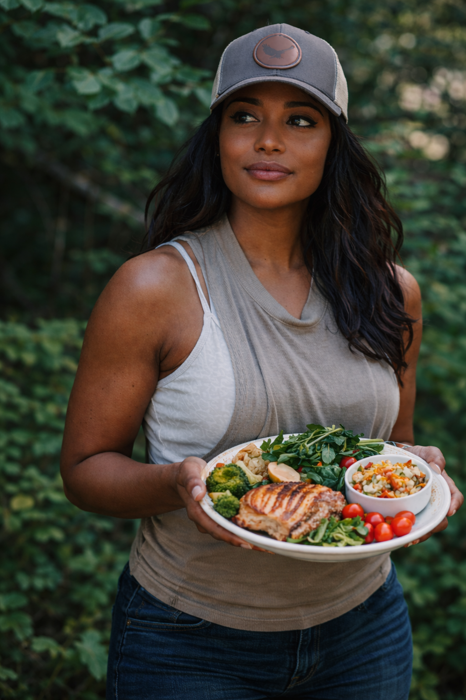

À propos
Maison Djoumessi est un sanctuaire de soin global, où la nutrition holistique, la médecine ancestrale et l'énergie des plantes s'unissent pour accompagner une transformation profonde du corps et de l'âme.

Mon Parcours
Passionnée par la nature et le fonctionnement du corps humain, j’ai consacré ces dernières années à l’étude de la nutrition holistique. Mon approche ne se limite pas à l’assiette, elle englobe l’être tout entier.
Ma Philosophie
- Alimentation Intuitive : Écouter les signaux du corps sans culpabilité.
- Plantes Médicinales : Utiliser la puissance de la nature.
- Connexion Corps-Esprit : Comprendre l’impact des émotions.
Ma Différence
Je ne propose pas de régimes stricts, mais un retour à soi. Mon accompagnement vous rend autonome et aligné avec votre santé.
Une vocation née du soin
Depuis mon enfance, j’ai toujours ressenti un appel naturel à soigner, à écouter et à accompagner. Ce qui a commencé comme un geste instinctif est devenu une vocation, puis un métier profondément ancré dans le respect du corps et de ses rythmes.
Mon approche
À travers Maison Djoumessi, je propose une approche intuitive, thérapeutique et vibratoire de la santé. J’unis les connaissances scientifiques, les savoirs ancestraux et l’écoute subtile du corps pour accompagner chaque personne avec douceur et justesse.
Je crée des tisanes sacrées, des ebooks éducatifs et des programmes sur-mesure pour celles et ceux qui souhaitent retrouver équilibre, vitalité et connexion profonde à leur être.
L’univers Maison Djoumessi
Mon univers s’adresse aux esprits sensibles à la beauté, à la nature et à la sagesse ancienne. Chaque création, chaque soin et chaque mot est pensé comme un rituel de guérison.
Nutrition sacrée. Savoirs ancestraux. Plantes vibratoires.
Bienvenue chez Maison Djoumessi.
Lire mon chemin de guérison →